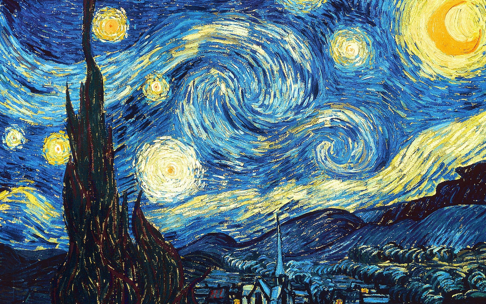
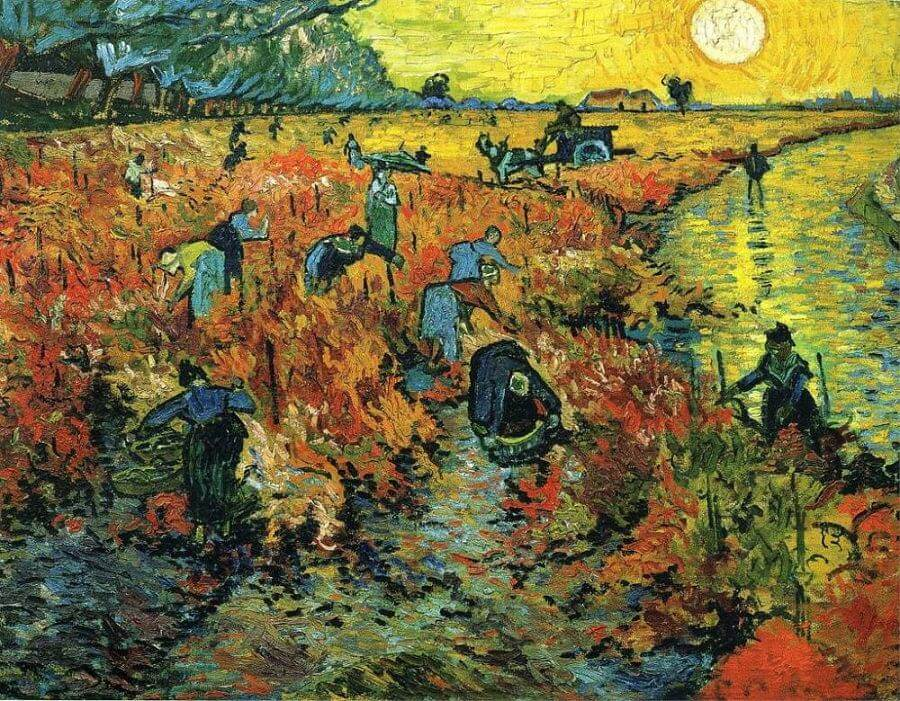
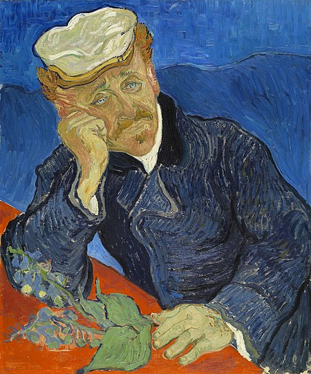
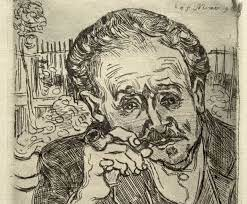

The story of the Portrait of Dr. Gachet
Portrait of Dr. Gachet is one of the most revered paintings by Vincent van Gogh. It depicts Dr. Paul Gachet who took care of Van Gogh during the final months of his life. There are two authenticated versions of the portrait, both painted in June 1890 at Auvers. Both show Doctor Gachet sitting at a table and leaning his head on his right arm but they are easily differentiated in color and style..
In 1890, the first version fetched a record price of $82.5 million ($75 million, plus a 10 percent buyer's commission) when sold at auction in New York. When accounting for inflation, this is still the highest price paid for art at a public auction.
Vincent van Gogh's first impression of Gachet
Vincent van Gogh's first impression of Gachet was unfavorable. Writing to Theo he remarked: "I think that we must not count on Dr. Gachet at all. First of all, he is sicker than I am, I think, or shall we say just as much, so that's that. Now when one blind man leads another blind man, don't they both fall into the ditch?"[4] However, in a letter dated two days later to their sister Wilhelmina, he relayed, "I have found a true friend in Dr. Gachet, something like another brother, so much do we resemble each other physically and also mentally.
The second version of the portrait:

”I don't know anything with certainty, but seeing the stars makes me dream. ”